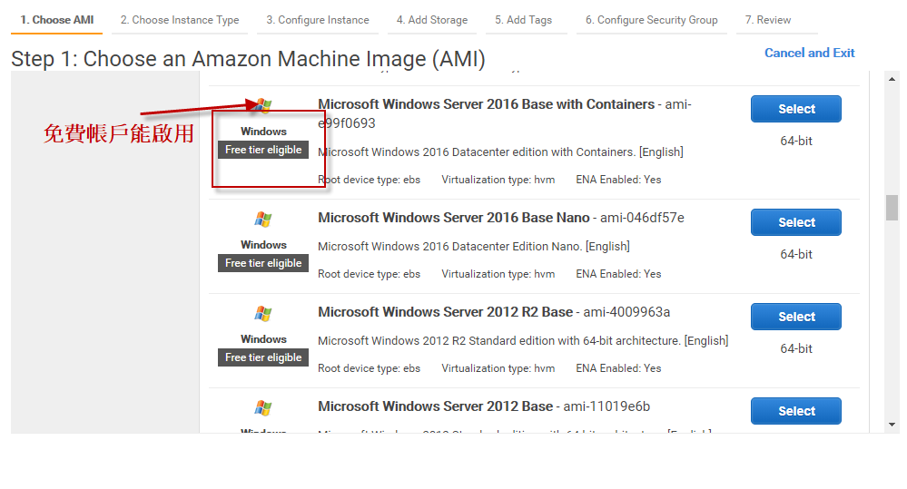
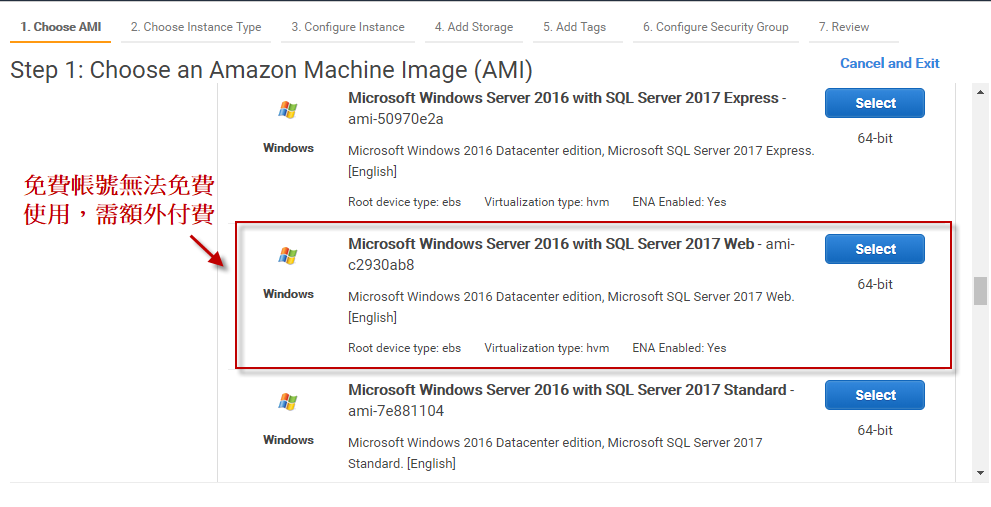
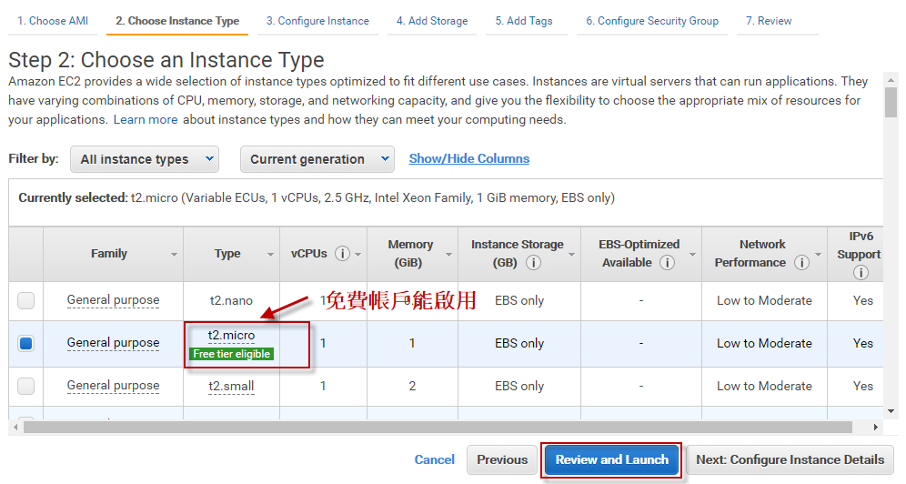
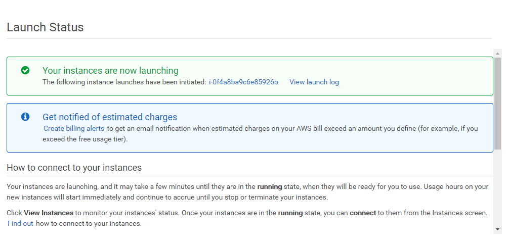
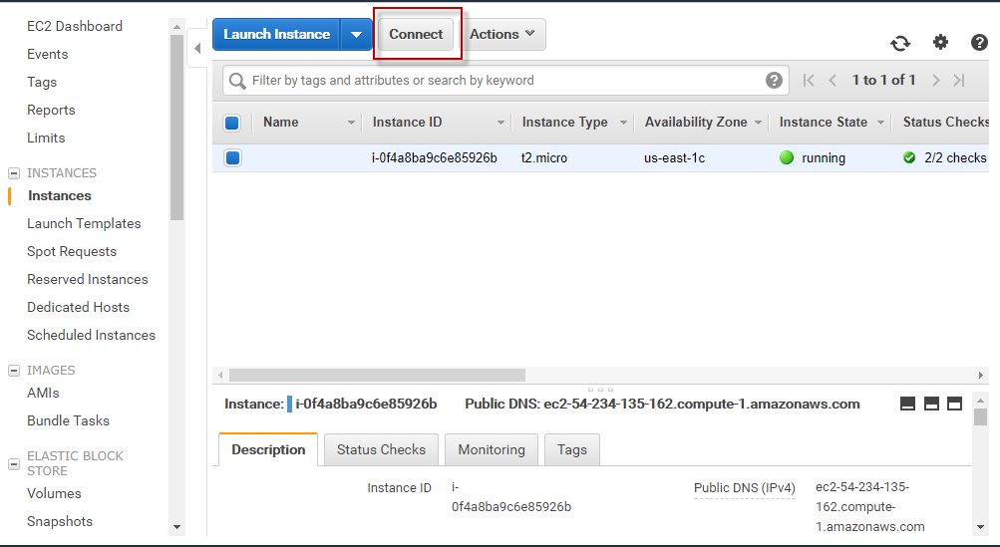
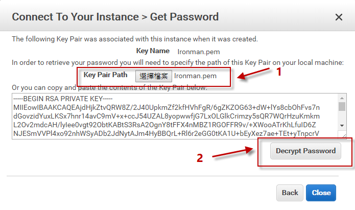
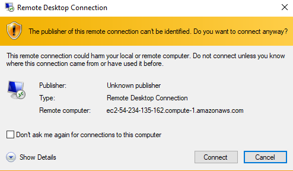
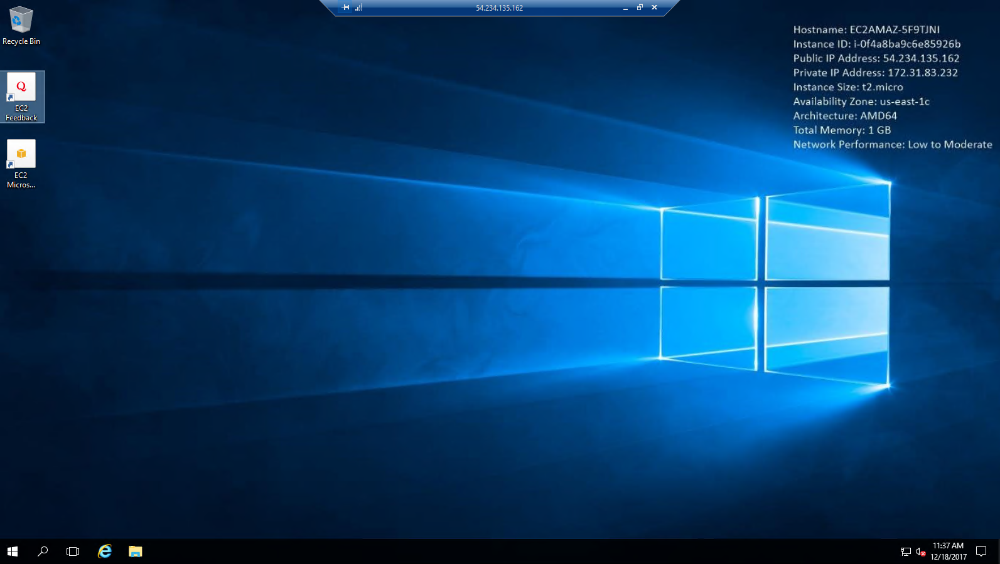

30天鐵人賽介紹 AWS 雲端世界 - 13: 使用 Elastic Compute Cloud(EC2) 達到在雲端上啟用 VM 服務
What is Elastic Compute Cloud
Elastic Compute Cloud(EC2)是提供虛擬主機服務的功能，使用上如同使用一個 VM 一樣。此服務可以自由的調整運算容量與記憶體大小。而計費方式則視需要啟動應用程式的資源用多少算多少，無須預付款項。
而 EC2 的啟用也相當快速，這讓取得與啟動新伺服器執行個體(instance)所需的時間可縮短至分鐘級，而不用像以往在公司內遞送表單，等到硬體支援與網路設定等都切好再安裝 OS 可能快則幾個小時或半天，慢則可能要等上一個禮拜。
Pricing Type and Free Tier
而 EC2 的計價主要可分為幾種：
On-Demand
根據您所實際消費 EC2 資源的付款帳單用多少計價多少，而2017 年最大的消息之一就是 EC2 目前依據使用秒數計費，而最低的計價需要60秒。細節可以參考宣布 Amazon EC2 以秒計費
Reserved Instances
相較於 On-Demand ，此方案提供了大幅折扣(最高可達75%)，但需要先預付一筆金額購買 AWS 服務內的服務時數，價格依據購買的服務等級與時間會有不同的折扣(1 年期或 3 年期。可彈性變更自己預留執行個體的可用區域、執行個體大小及類型)，詳細折扣可以參考Amazon EC2 Reserved Instances Pricing
Spot Instances
以競標的方式標用服務，可以用比較低廉的價錢租用機器，但缺點是隨時可能會中斷，所以程式必須定時記錄進度，自動處理重跑的流程。當出價不足以標到該服務時，會先關起來 (Stop)，等到價錢低於出價後就會再打開機器，這時候的狀態就會恢復(必須是使用 EBS 的機器才有支援)。當你想用的時段越少人搶標，選用這樣的計價方式就越划算。
Dedicated Hosts
Dedicated Hosts 簡單來講就是租用實體主機，所以會根據執行個體系列、區域及付款選項而有不同。無論在特定專用主機上選擇啟動的執行個體數目或大小為何，都只需支付每個作用中專用主機每小時的費用，不會針對執行個體的使用時間計費。但好處是上面可以安裝你指定的軟體與套件。
而 Dedicated Hosts 也可以搭配 Reserved Instances 購買並預付較長期的合約換取更佳的價格折扣。
細節可參考Amazon EC2 Pricing
而除了上述的分類之外，與計價有關的主要就是使用的CPU、Memory、Instance Storage、Network Performance 、In-bound/out-bound(同一個AZ的服務傳送則大多免錢) 與 OS 等，這些都會影響到整體的費用。
因為筆者這一系列的試用都是 Free Tier 的，所以能啟用的 EC2 Instance 都是免費但相對較受限的資源(每個月可以在 Amazon EC2 t2.micro 執行個體中使用 750 小時，30 GB 的 Amazon Elastic Block Storageㄊ，可適用 12 個月)：
細節請參考AWS 免費方案詳細資訊
EC2除了運行時間需要收費外，資料的傳輸費用是另外計算的：
- 將資料上傳進入到AWS內不用錢。
- intranet 傳輸不用錢。
- AWS服務上跨 AZ 傳輸要錢。
- 第一個 GB 不用錢（每月重算累計）。
Instance Type
EC2 提供多種經過優化、適用於不同使用案例的執行個體類型以供選擇。不同的執行個體類型由 CPU、記憶體、儲存和網路頻寬與速度組合構成。所以再挑選上我們可以盡量選擇對我們當前應用較為有利的選項，例如我們需要的是大量的運算，則挑選 C5 之類的 ，而如果是要用 GPU 做運算則可以挑選 P3 之類的。
| General- Purpose | Compute-Optimized | Memory-Optimized | Accelerated-Computing | Storage-Optimized | |
|---|---|---|---|---|---|
| 特色 | 一般應用 | 運算優化(CPU) | 記憶體優化 | 加速運算優化(GPU) | 儲存優化 |
| 使用情境 | 網頁應用程式伺服器, 程式碼儲存槽(repository) | 資料分析、影音處理 | In-memory 資料庫, Apache Spark | 影音呈向(rendering)、machine learnin | 資料分析或分散式資料庫 |
這邊找到熱心網友整理的完整表單EC2Instances.info - Easy Amazon EC2 Instance Comparison，可以看到各種類型的CPU、Memory、Instance Storage、Network Performance 與 OS 種類的成本對照表。
Hands on Lab
首先我們一樣先登入 AWS Console
然後在中間的輸入框查詢 EC2 ，或是透過左上角的 Services 點選到 Compute 下的 EC2 服務。
接著我們可以點選 Launch Instance 來快速新增一個以建立好 Amazon Machine Image (AMI)的映像檔案來還原或是我們也可以建立 template來快速啟用已建立好的服務類型：


這邊直接點選 Review and Launch 開啟一個新的 Windows Instance(預設其他執行個體設定，包含硬碟切割與安全設定等)：



這邊可以選擇已存在的金鑰，或是當下重新產生：

當確認無誤後稍等一下應該就可以看到該執行個體已經在運行了：


這邊當我們點選 connect 後就可以看到設定密碼的部分，只要把原先使用的金鑰上傳上去就可以獲得一個密碼：

最後可以透過介面下載的 .rdp 檔案或是直接透過 ip 就可以遠端登入了


如果遠端桌面無法登入的話可以參考How do I troubleshoot problems using Remote Desktop to connect to my Amazon EC2 Windows instance?